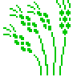
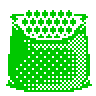

Indicateurs de l'écran d'accueil
Chaque indicateur de l'écran d'accueil avec tous ses états — ce que vous voyez, ce que cela signifie, ce qu'il faut faire.
L'emplacement de chaque indicateur est montré dans L'écran d'accueil. Cette page dit ce que signifie chacun, état par état. Maintenez le doigt sur un indicateur pour ouvrir le menu contextuel de son appareil.
Comment lire un indicateur


Presque tous les indicateurs suivent la même règle. Apprenez-la une fois et vous saurez lire un indicateur que vous n'avez jamais vu.
| Ce que vous voyez | Ce que cela signifie |
|---|---|
| Normal. L'appareil répond et sa valeur est dans les limites. | |
| Alarme. L'appareil répond, mais la valeur est sortie des limites. Une fenêtre d'alarme suit après le délai d'alarme. | |
| Icône en alternance avec une × rouge | Pas de réponse de l'appareil. La valeur s'affiche XXXX. |
| L'appareil figure dans le profil, mais sa surveillance est désactivée. La valeur s'affiche !!!!. | |
| Icône en alternance avec un ? rouge | Un appareil d'un mauvais type répond à sa place. La valeur s'affiche ????. |
| Pas un défaut. Un état que vous avez choisi ou qui demande votre attention : machine relevée, traceurs relevés, contact coupé, application verrouillée à la main. |
Vitesse
La vitesse d'avancement en km/h, en grand, en haut à gauche. Les messages sur la vitesse remplacent le chiffre et clignotent environ une fois par seconde, pour que le chiffre reste lisible.
| Ce que vous voyez | Ce que cela signifie |
|---|---|
| Un nombre en blanc, par ex. 10.0 | Normal. |
| « SLOWER » (plus lentement) sur fond rouge | Vous roulez plus vite que le maximum réglé pour le capteur de vitesse. Ralentissez. |
| « FASTER » (plus vite) sur fond rouge | Vous roulez plus lentement que le minimum. Accélérez. |
| XX.X en rouge, clignotant | Pas de réponse de l'appareil qui porte le capteur de vitesse. |
| ???? en rouge | Un appareil d'un mauvais type répond à la place du capteur de vitesse. |
| !!.! en blanc | Le capteur de vitesse n'est pas sous surveillance. |
| Un nombre jaune en alternance avec « IMITATION » (simulation) | La vitesse est simulée d'après le réglage du capteur de vitesse, pas mesurée. Voir Travailler sans capteur de vitesse. |
| INCREASE IMITATION / DECREASE IMITATION | La vitesse simulée elle-même est hors de la plage permise. Modifiez le réglage, pas la vitesse d'avancement. |
| « Sensor » (capteur) avec un numéro | L'un des deux capteurs de vitesse est en panne. |
| « Settings » (réglages) | Les vitesses minimale et maximale se contredisent. |
« SLOWER » et « FASTER » ne sont pas des fenêtres d'alarme. Ils restent dans le champ de vitesse aussi longtemps que la vitesse est fausse, parce que vous devez les voir pendant que vous la corrigez. Vitesse par le récepteur intégré : GPS.
Horloge
L'emplacement de l'horloge, en haut à droite, est partagé par plusieurs messages.
| Ce que vous voyez | Ce que cela signifie |
|---|---|
| L'heure en blanc | Normal. |
| BAT en rouge, pendant environ une seconde sur quatre | La pile de l'horloge est faible. L'horloge tourne encore ; entre les clignotements, l'heure s'affiche en rouge. Faites remplacer la pile. |
| XX:XX en rouge, clignotant | La puce d'horloge ne répond pas. Tout ce que le panneau enregistre porte une date et une heure fausses. |
| IMITAT en jaune | Le mode de simulation du menu de service est activé. |
| Heures:minutes en bleu, puis TRIAL, puis rien | Une période d'essai est en cours ; le chiffre bleu est le temps restant. |
L'horloge se règle sous « Settings » (réglages) → « Change Date&Time » (changer la date et l'heure) : touchez chaque ligne et glissez-la jusqu'à sa valeur, puis touchez « Set » (valider) deux fois — une fois pour le sélectionner, une fois pour enregistrer l'heure. Quitter sans « Set » conserve l'ancienne heure.
Carte mémoire

Un symbole de carte à côté de l'horloge, ou dans la colonne de droite. Affiché tant qu'une carte microSD est dans le lecteur et prête à recevoir des données.
Trémie


Une trémie verte pleine est normale. Une trémie rouge vide, clignotante, signifie que le niveau est tombé sous le capteur : remplissez.
Doseur

La rotation de l'arbre du doseur. Tant que l'arbre tourne, l'icône tourne — le moyen le plus rapide de voir que le doseur fonctionne vraiment. Rouge signifie pas de rotation, ou pas la vitesse requise.
Turbine


La vitesse de la turbine en tours par minute (tr/min). Vert est normal ; rouge — au-dessus du maximum ou sous le minimum.
Pression

La dépression ou la surpression d'air dans le système de distribution, en kPa. Vert est normal ; rouge — hors de la plage permise.
Capteurs du moteur


Les capteurs du moteur qui entraîne la turbine.
| Indicateur | Vert | Rouge ou jaune |
|---|---|---|
| Pression d'huile | Normal | Rouge : la pression d'huile est tombée sous le niveau permis. |
| Charge de la batterie | Normal | Rouge : la batterie ne se charge pas. |
| Allumage | Clé verte : contact mis | Clé jaune : contact coupé. Pas un défaut, et jamais une fenêtre d'alarme. |
| Niveau de carburant | Normal | Rouge : il reste peu de carburant dans le réservoir. |
| Filtre à air | Normal | Rouge : le filtre à air est colmaté ; nettoyez-le ou remplacez-le. |
Surface

La surface traitée sur la parcelle active, en hectares.
Population

En mode « Precise » : la dose de semis réelle en milliers de graines par hectare.
Dose de produit en masse

Affiché quand des produits sont appliqués en masse ; un indicateur par produit, avec son numéro. Il montre un seul chiffre, en kg/ha.
| Ce que vous voyez | Ce que cela signifie |
|---|---|
| Icône verte, chiffre blanc | Normal. Tant que la dose réelle reste dans l'écart permis, le chiffre affiché est la consigne. |
| Icône rouge, clignotante | La dose réelle est hors de l'écart permis par rapport à la consigne. |
| Champ allumé | Vous venez de régler la consigne. |
Pour régler la consigne, maintenez le doigt sur l'indicateur. Le pavé numérique s'ouvre avec le titre Product et son numéro ; saisissez la dose, de 10,0 à 500,0 kg/ha, et touchez « OK ».
Dosage en masse impossible
Une icône de produit rouge clignotante dans la colonne de droite. Le panneau a calculé que la consigne ne peut être tenue à aucune vitesse d'avancement : la vitesse la plus basse à laquelle les cannelures de dosage peuvent débiter la dose est déjà égale ou supérieure à la plus haute.
Que faire. Vérifiez d'abord les doses de consigne — un produit qui en demande trop ferme la fenêtre pour tous. Vérifiez ensuite les cannelures de dosage. Les limites de vitesse calculées par le panneau figurent sur l'écran « Information » (informations) du capteur de vitesse.
Traceurs

| Ce que vous voyez | Ce que cela signifie |
|---|---|
| Vert, deux bras abaissés | Les deux traceurs sont abaissés. |
| Vert, un bras abaissé | Seul ce traceur est abaissé. |
| Jaune, deux bras relevés | Les deux traceurs sont relevés. Sur une machine qui change le passage de jalonnage par les traceurs, le passage change maintenant. |
Une machine à un seul traceur a une seule icône, qui montre ce traceur abaissé ou relevé.
Position de la machine

Vert — abaissée, au travail. Jaune, clignotant — relevée, en transport, sans appliquer.
Passage de jalonnage

Affiché uniquement si le jalonnage est activé. Le grand nombre est le passage en cours, le petit au-dessus le nombre de passages du rythme.
| Ce que vous voyez | Ce que cela signifie |
|---|---|
| Icône de jalonnage grise | Le passage change de lui-même à la fin de chaque passe. |
| Icône de jalonnage jaune | Le passage ne change pas de lui-même : la machine n'a ni capteur de traceur ni capteur de position de travail qui réponde et soit sous surveillance. |
| Un symbole jaune clignotant à la place de l'icône | Le passage pourrait changer de lui-même, mais le changement automatique est désactivé. |
Comment le passage est compté : Régler le rythme de jalonnage.
Verrouillage manuel

Une main jaune, clignotante, dans la colonne de droite : l'application du produit est verrouillée à la main. La machine n'applique rien, quoi qu'il arrive. Non affichée tant que l'application est autorisée. Elle apparaît sur les machines à moteurs électriques de doseur ou à pompe d'engrais liquide. Voir Verrouiller l'application du produit à la main.
Défaut d'actionneur

Une icône pour tous les moteurs électriques et actionneurs de jalonnage ensemble, dans la colonne de droite. Pas du tout affichée tant que tout est en ordre.
| Ce que vous voyez | Ce que cela signifie |
|---|---|
| Rouge, clignotante | Au moins un moteur ou un actionneur est en état d'alarme. |
| En alternance avec un [!] blanc | La surveillance d'au moins un actionneur est désactivée. |
Lequel et pourquoi : voir l'écran Motors.
Pompe d'engrais liquide
| Indicateur | Ce qu'il montre |
|---|---|
| En L/min quand la machine a des capteurs de sections liquides, sinon en L/Ha. Vert, rouge, × et [!] comme d'habitude. Tant que la dose reste dans l'écart permis, le chiffre affiché est la consigne. | |
| Avec quelle force la pompe travaille. Jaune à 99 % et plus : la pompe est à sa limite — roulez plus lentement, sinon la dose tombe sous la consigne. ---- rouge clignotant : le contrôleur ne donne pas de valeur de charge. | |
| Uniquement si le capteur de pression est activé dans les réglages de la pompe. Rouge : la pression du liquide est trop élevée. ---- rouge clignotant : le capteur de pression est défectueux ou ne donne aucune valeur. |
Votre machine fait quelque chose que cette page n'explique pas ? Écrivez à support@agriwelt.com — un ingénieur vous répond.